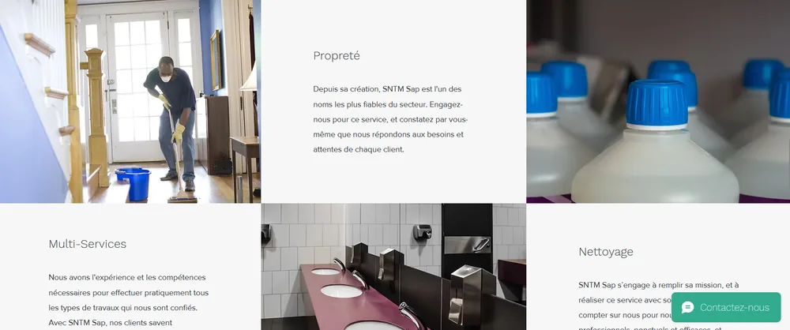
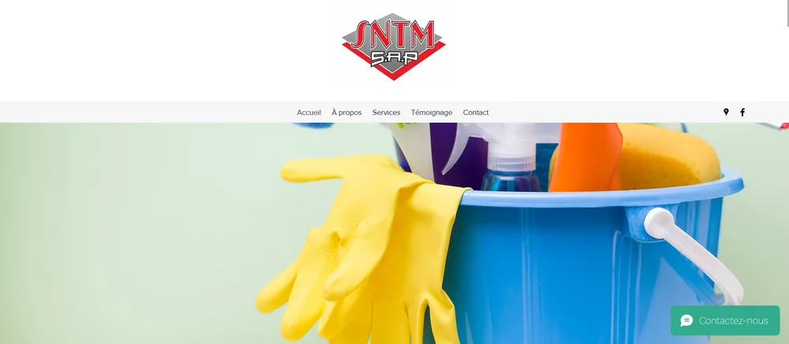

Le fond sombre
Un sol traité se reconnaît à ce qu'il renvoie. Un reflet ne se lit pas sur du blanc : il lui faut de l'ombre autour. Le noir n'est pas un choix d'ambiance, c'est ce qui rend la matière visible.
SNTM SAP entretient les sols et les locaux professionnels du Golfe de Saint-Tropez : commerces, établissements scolaires, bureaux, copropriétés, chantiers à livrer. Marbre, travertin, terre cuite, parquet, béton ciré, grès cérame — chaque matériau appelle une méthode différente, et c'est cette différence qui fait le métier. Le site devait la rendre visible avant qu'on décroche le téléphone.
Le site précédent remplissait sa fonction première : exister, donner un nom, donner un numéro. Il avait été mis en place vite, à partir d'un modèle, comme le font la plupart des entreprises qui privilégient le terrain — et pendant plusieurs années, il a suffi.
Ce qu'il ne disait pas, c'est le métier. Il annonçait « propreté », « multi-services », « nettoyage » : trois mots que peut écrire n'importe quelle entreprise du secteur, en France entière. Les photographies venaient d'une banque d'images — des gants en caoutchouc, des bidons de produit, une serpillière. Aucune ne montrait un sol traité par SNTM.
Toute l'expertise existait dans l'entreprise. Elle n'existait pas en ligne.


Avant de dessiner quoi que ce soit, on liste. D'un côté ce que le site disait, de l'autre ce que l'entreprise fait réellement. L'écart entre les deux colonnes est tout le projet.
Avant, une paire de gants en caoutchouc. Après, un travertin.
Sud Web Project — Saint-TropezUne entreprise de nettoyage, sur internet, se présente presque toujours de la même façon : fond blanc ou bleu clair, une personne en tenue, un chariot, un sourire. Ce vocabulaire montre l'effort. Il ne montre pas le résultat.
Or SNTM n'est pas jugée sur son effort. Elle est jugée sur une surface, à un mètre du sol, par quelqu'un qui se penche. Toute la direction artistique découle de ce constat.
Un sol traité se reconnaît à ce qu'il renvoie. Un reflet ne se lit pas sur du blanc : il lui faut de l'ombre autour. Le noir n'est pas un choix d'ambiance, c'est ce qui rend la matière visible.
C'est l'éclairage qu'utilise un professionnel pour contrôler son travail : la lumière prise de biais révèle le grain, les micro-rayures, les auréoles. Le site regarde les sols comme SNTM les regarde.
Pas de chariot, pas de gants, pas d'équipe qui sourit. Ces images disent qu'on travaille — ce dont personne ne doute. Les images retenues disent ce qu'on obtient, ce qui est la seule question du client.
On ne distingue pas un travertin d'un grès cérame dans une photo de pièce entière. On les distingue à vingt centimètres. Chaque matériau est montré à la distance où son traitement se juge.
Le rouge de l'entreprise n'est utilisé que là où il doit provoquer quelque chose : demander un devis. Partout ailleurs, la page s'efface. Une couleur qui apparaît partout ne signale plus rien.
Une direction artistique construite sur ce que SNTM manipule réellement — le détail des décisions est exposé plus haut. Plus une seule photo de banque d'images : le métier est montré par ses surfaces, pas par son matériel.
Une page dédiée par prestation — locaux commerciaux, établissements scolaires, remise en état après travaux, traitement des sols — et six matériaux traités séparément, chacun avec son entrée propre. Là où il y avait trois mots, il y a un chemin.
Le déroulé d'une intervention est écrit avant qu'on appelle : visite sur site, test sur zone, intervention, entretien. C'est la première chose qu'on cherche à savoir avant de confier un sol à quelqu'un, et c'est ce qui distingue une entreprise d'un numéro de téléphone.
Structure technique reprise entièrement, contenu écrit par prestation et par commune du Golfe, images en formats modernes et en plusieurs largeurs. Le référencement local se construit sur des pages qui répondent à une question précise, pas sur des mots-clés ajoutés.
Une version anglaise complète, page par page. Dans le Golfe, une partie des donneurs d'ordre — villas, copropriétés, gestionnaires — ne cherche pas en français.
Un site codé entièrement à la main, sans modèle ni extension. La page d'accueil ne cherche plus à dire que l'entreprise est sérieuse : elle montre une surface, nomme la zone, et propose deux actions.

Ce projet n'aurait pas pu être conçu pour quelqu'un d'autre.
Et les résultats chiffrés ? Le site vient d'être mis en ligne. Le trafic, les positions et les demandes entrantes se mesurent sur plusieurs mois — ils seront ajoutés ici quand ils existeront, avec leur période et leur source. Ce qui est présenté sur cette page est ce qui a été livré, rien d'autre.
La même démarche s'applique à votre métier, quel qu'il soit : comprendre ce que vous faites avant de décider à quoi votre site doit ressembler.
Parlons de votre projet